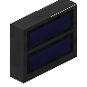
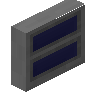

Macaw 的门 / 麦考的门 Macaw's Doors
共 282 个条目 · mcwdoors
版本: 1.1.5 · 来源: mcw-doors-1.1.5-mc1.21.1neoforge.jar
Adds a lot of new Doors! With vanila and unique styles.
MC百科中文名: Macaw 的门 / 麦考的门
MC百科页面: https://www.mcmod.cn/class/2574.html（Macaw 的门 / 麦考的门 (Macaw's Doors)）
MC百科检索: site:mcmod.cn Macaw's Doors
官方介绍 （Modrinth · 中文版由 GLM AI 翻译，仅供参考）
你是否想过让每种原版门都拥有更多木材变种？或者你只是想要一些全新的独特门？
如果是这样，那就向你介绍 Macaw's Doors。这个模组让你能用每一种木材 颜色来制作原版门。模组还新增了各种新门，例如：障子门、金属门、监狱门、现代门等等！
欢迎到我们的 Macaw's Discord 提出你的想法。
Macaw's Doors 视频展示
需要服务器吗？使用折扣码 sketchmacaw 在 BisectHosting 购买 Minecraft 服务器，首月立享 75 折优惠，尽情畅玩吧！
Q: 有计划向下移植到 1.15.2 或更低版本吗？\ A: 可能性很小，但说不定哪天会出一个最后的 1.12.2 版本……
Q: 我可以在自己的整合包中使用你的模组吗？\ A: 可以，只需注明出处，并附上 Modrinth 页面的链接。
Q: 我做好了翻译，应该发到哪里给你？\ A: 发到 Github 或我们的 Discord 服务器都可以。
由 GLM AI 翻译，仅供参考
查看英文原文（Modrinth）
Do you ever wanted each vanilla door to have more wood variations? Or do you just want some new unique doors?
Well, if so I present you Macaw's Doors. This mod gives you the opportunity to make vanila doors with every wood
color. I includes new doors too, for example: Shoji Doors, Metal Doors, Jail Doors, Modern Doors and more!
Suggest your ideas on our Macaw's discord.
Macaw's Doors Video Showcase
Do you need a server? Grab 25% off your first month on a BisectHosting Minecraft server using the code sketchmacaw and enjoy playing!
Q: Do you have any plans on backporting to 1.15.2 and lower?\ A: Very unlikely, but a last 1.12.2 version could happen at some time..
Q: Can I use your mods in my modpack?\ A: Yes, just credit us and with a reference to the modrinth page
Q: I have a translation for you, where can I send it to you?\ A: Either on Github or on our discord server
资料来源：Macaw's Doors
物品与方块
 金合欢网格门
金合欢网格门mcwdoors:acacia_bamboo_door · 方块
 金合欢树皮玻璃门
金合欢树皮玻璃门mcwdoors:acacia_bark_glass_door · 方块
 金合欢谷仓门
金合欢谷仓门mcwdoors:acacia_barn_door · 方块
 金合欢玻璃谷仓门
金合欢玻璃谷仓门mcwdoors:acacia_barn_glass_door · 方块
 金合欢沙滩门
金合欢沙滩门mcwdoors:acacia_beach_door · 方块
 金合欢经典门
金合欢经典门mcwdoors:acacia_classic_door · 方块
 金合欢小屋门
金合欢小屋门mcwdoors:acacia_cottage_door · 方块
 金合欢四扇板门
金合欢四扇板门mcwdoors:acacia_four_panel_door · 方块
 金合欢玻璃门
金合欢玻璃门mcwdoors:acacia_glass_door · 方块
 金合欢整版拉门
金合欢整版拉门mcwdoors:acacia_japanese2_door · 方块
 金合欢拉门
金合欢拉门mcwdoors:acacia_japanese_door · 方块
 金合欢现代门
金合欢现代门mcwdoors:acacia_modern_door · 方块
 金合欢神秘门
金合欢神秘门mcwdoors:acacia_mystic_door · 方块
 金合欢下界门
金合欢下界门mcwdoors:acacia_nether_door · 方块
 金合欢纸门
金合欢纸门mcwdoors:acacia_paper_door · 方块
 金合欢马厩门
金合欢马厩门mcwdoors:acacia_stable_door · 方块
 金合欢马厩马门
金合欢马厩马门mcwdoors:acacia_stable_head_door · 方块
 金合欢沼泽门
金合欢沼泽门mcwdoors:acacia_swamp_door · 方块
 金合欢华夫饼门
金合欢华夫饼门mcwdoors:acacia_waffle_door · 方块
 金合欢西部门
金合欢西部门mcwdoors:acacia_western_door · 方块
 金合欢低语门
金合欢低语门mcwdoors:acacia_whispering_door · 方块
 竹子树皮玻璃门
竹子树皮玻璃门mcwdoors:bamboo_bark_glass_door · 方块
 竹子谷仓门
竹子谷仓门mcwdoors:bamboo_barn_door · 方块
 竹子玻璃谷仓门
竹子玻璃谷仓门mcwdoors:bamboo_barn_glass_door · 方块
 竹子沙滩门
竹子沙滩门mcwdoors:bamboo_beach_door · 方块
 竹子经典门
竹子经典门mcwdoors:bamboo_classic_door · 方块
 竹子小屋门
竹子小屋门mcwdoors:bamboo_cottage_door · 方块
 竹子四扇板门
竹子四扇板门mcwdoors:bamboo_four_panel_door · 方块
 竹子玻璃门
竹子玻璃门mcwdoors:bamboo_glass_door · 方块
 竹子整版拉门
竹子整版拉门mcwdoors:bamboo_japanese2_door · 方块
 竹子拉门
竹子拉门mcwdoors:bamboo_japanese_door · 方块
 竹子现代门
竹子现代门mcwdoors:bamboo_modern_door · 方块
 竹子神秘门
竹子神秘门mcwdoors:bamboo_mystic_door · 方块
 竹子下界门
竹子下界门mcwdoors:bamboo_nether_door · 方块
 竹子纸门
竹子纸门mcwdoors:bamboo_paper_door · 方块
 竹子马厩门
竹子马厩门mcwdoors:bamboo_stable_door · 方块
 竹子马厩马门
竹子马厩马门mcwdoors:bamboo_stable_head_door · 方块
 竹子沼泽门
竹子沼泽门mcwdoors:bamboo_swamp_door · 方块
 竹子热带门
竹子热带门mcwdoors:bamboo_tropical_door · 方块
 竹子华夫饼门
竹子华夫饼门mcwdoors:bamboo_waffle_door · 方块
 竹子西部门
竹子西部门mcwdoors:bamboo_western_door · 方块
 竹子低语门
竹子低语门mcwdoors:bamboo_whispering_door · 方块
 白桦网格门
白桦网格门mcwdoors:birch_bamboo_door · 方块
 白桦树皮玻璃门
白桦树皮玻璃门mcwdoors:birch_bark_glass_door · 方块
 白桦谷仓门
白桦谷仓门mcwdoors:birch_barn_door · 方块
 白桦玻璃谷仓门
白桦玻璃谷仓门mcwdoors:birch_barn_glass_door · 方块
 白桦沙滩门
白桦沙滩门mcwdoors:birch_beach_door · 方块
 白桦经典门
白桦经典门mcwdoors:birch_classic_door · 方块
 白桦小屋门
白桦小屋门mcwdoors:birch_cottage_door · 方块
 白桦四扇板门
白桦四扇板门mcwdoors:birch_four_panel_door · 方块
 白桦玻璃门
白桦玻璃门mcwdoors:birch_glass_door · 方块
 白桦整版拉门
白桦整版拉门mcwdoors:birch_japanese2_door · 方块
 白桦拉门
白桦拉门mcwdoors:birch_japanese_door · 方块
 白桦现代门
白桦现代门mcwdoors:birch_modern_door · 方块
 白桦神秘门
白桦神秘门mcwdoors:birch_mystic_door · 方块
 白桦下界门
白桦下界门mcwdoors:birch_nether_door · 方块
 白桦马厩门
白桦马厩门mcwdoors:birch_stable_door · 方块
 白桦马厩马门
白桦马厩马门mcwdoors:birch_stable_head_door · 方块
 白桦沼泽门
白桦沼泽门mcwdoors:birch_swamp_door · 方块
 白桦热带门
白桦热带门mcwdoors:birch_tropical_door · 方块
 白桦华夫饼门
白桦华夫饼门mcwdoors:birch_waffle_door · 方块
 白桦西部门
白桦西部门mcwdoors:birch_western_door · 方块
 白桦低语门
白桦低语门mcwdoors:birch_whispering_door · 方块
 樱花网格门
樱花网格门mcwdoors:cherry_bamboo_door · 方块
 樱花树皮玻璃门
樱花树皮玻璃门mcwdoors:cherry_bark_glass_door · 方块
 樱花谷仓门
樱花谷仓门mcwdoors:cherry_barn_door · 方块
 樱花玻璃谷仓门
樱花玻璃谷仓门mcwdoors:cherry_barn_glass_door · 方块
 樱花沙滩门
樱花沙滩门mcwdoors:cherry_beach_door · 方块
 樱花经典门
樱花经典门mcwdoors:cherry_classic_door · 方块
 樱花小屋门
樱花小屋门mcwdoors:cherry_cottage_door · 方块
 樱花四扇板门
樱花四扇板门mcwdoors:cherry_four_panel_door · 方块
 樱花玻璃门
樱花玻璃门mcwdoors:cherry_glass_door · 方块
 樱花整版拉门
樱花整版拉门mcwdoors:cherry_japanese2_door · 方块
 樱花拉门
樱花拉门mcwdoors:cherry_japanese_door · 方块
 樱花现代门
樱花现代门mcwdoors:cherry_modern_door · 方块
 樱花神秘门
樱花神秘门mcwdoors:cherry_mystic_door · 方块
 樱花下界门
樱花下界门mcwdoors:cherry_nether_door · 方块
 樱花纸门
樱花纸门mcwdoors:cherry_paper_door · 方块
 樱花马厩门
樱花马厩门mcwdoors:cherry_stable_door · 方块
 樱花马厩马门
樱花马厩马门mcwdoors:cherry_stable_head_door · 方块
 樱花沼泽门
樱花沼泽门mcwdoors:cherry_swamp_door · 方块
 樱花热带门
樱花热带门mcwdoors:cherry_tropical_door · 方块
 樱花西部门
樱花西部门mcwdoors:cherry_western_door · 方块
 樱花低语门
樱花低语门mcwdoors:cherry_whispering_door · 方块
 绯红网格门
绯红网格门mcwdoors:crimson_bamboo_door · 方块
 绯红谷仓门
绯红谷仓门mcwdoors:crimson_barn_door · 方块
 绯红玻璃谷仓门
绯红玻璃谷仓门mcwdoors:crimson_barn_glass_door · 方块
 绯红沙滩门
绯红沙滩门mcwdoors:crimson_beach_door · 方块
 绯红经典门
绯红经典门mcwdoors:crimson_classic_door · 方块
 绯红小屋门
绯红小屋门mcwdoors:crimson_cottage_door · 方块
 绯红四扇板门
绯红四扇板门mcwdoors:crimson_four_panel_door · 方块
 绯红玻璃门
绯红玻璃门mcwdoors:crimson_glass_door · 方块
 绯红整版拉门
绯红整版拉门mcwdoors:crimson_japanese2_door · 方块
 绯红拉门
绯红拉门mcwdoors:crimson_japanese_door · 方块
 绯红现代门
绯红现代门mcwdoors:crimson_modern_door · 方块
 绯红神秘门
绯红神秘门mcwdoors:crimson_mystic_door · 方块?绯红下界门
mcwdoors:crimson_nether_door · 方块
 绯红纸门
绯红纸门mcwdoors:crimson_paper_door · 方块
 绯红马厩门
绯红马厩门mcwdoors:crimson_stable_door · 方块
 绯红马厩马门
绯红马厩马门mcwdoors:crimson_stable_head_door · 方块
 绯红菌柄玻璃门
绯红菌柄玻璃门mcwdoors:crimson_stem_glass_door · 方块
 绯红沼泽门
绯红沼泽门mcwdoors:crimson_swamp_door · 方块
 绯红热带门
绯红热带门mcwdoors:crimson_tropical_door · 方块
 绯红华夫饼门
绯红华夫饼门mcwdoors:crimson_waffle_door · 方块
 绯红西部门
绯红西部门mcwdoors:crimson_western_door · 方块
 绯红低语门
绯红低语门mcwdoors:crimson_whispering_door · 方块
 深色橡木网格门
深色橡木网格门mcwdoors:dark_oak_bamboo_door · 方块
 深色橡木树皮玻璃门
深色橡木树皮玻璃门mcwdoors:dark_oak_bark_glass_door · 方块
 深色橡木谷仓门
深色橡木谷仓门mcwdoors:dark_oak_barn_door · 方块
 深色橡木玻璃谷仓门
深色橡木玻璃谷仓门mcwdoors:dark_oak_barn_glass_door · 方块
 深色橡木沙滩门
深色橡木沙滩门mcwdoors:dark_oak_beach_door · 方块
 深色橡木经典门
深色橡木经典门mcwdoors:dark_oak_classic_door · 方块
 深色橡木小屋门
深色橡木小屋门mcwdoors:dark_oak_cottage_door · 方块?深色橡木四扇板门
mcwdoors:dark_oak_four_panel_door · 方块
 深色橡木玻璃门
深色橡木玻璃门mcwdoors:dark_oak_glass_door · 方块
 深色橡木整版拉门
深色橡木整版拉门mcwdoors:dark_oak_japanese2_door · 方块
 深色橡木拉门
深色橡木拉门mcwdoors:dark_oak_japanese_door · 方块
 深色现代门
深色现代门mcwdoors:dark_oak_modern_door · 方块
 深色橡木神秘门
深色橡木神秘门mcwdoors:dark_oak_mystic_door · 方块
 深色橡木下界门
深色橡木下界门mcwdoors:dark_oak_nether_door · 方块
 深色橡木纸门
深色橡木纸门mcwdoors:dark_oak_paper_door · 方块
 深色橡木马厩门
深色橡木马厩门mcwdoors:dark_oak_stable_door · 方块
 深色橡木马厩马门
深色橡木马厩马门mcwdoors:dark_oak_stable_head_door · 方块
 深色橡木沼泽门
深色橡木沼泽门mcwdoors:dark_oak_swamp_door · 方块
 深色橡木热带门
深色橡木热带门mcwdoors:dark_oak_tropical_door · 方块
 深色橡木华夫饼门
深色橡木华夫饼门mcwdoors:dark_oak_waffle_door · 方块
 深色橡木西部门
深色橡木西部门mcwdoors:dark_oak_western_door · 方块
 深色橡木低语门
深色橡木低语门mcwdoors:dark_oak_whispering_door · 方块黑色车库门
mcwdoors:garage_black_door · 方块

灰色车库门mcwdoors:garage_gray_door · 方块?车库遥控器
mcwdoors:garage_remote · 物品

银色车库门mcwdoors:garage_silver_door · 方块
 白色车库门
白色车库门mcwdoors:garage_white_door · 方块
 铁质吊闸门
铁质吊闸门mcwdoors:iron_portcullis · 方块
 监狱门
监狱门mcwdoors:jail_door · 方块
 丛林网格门
丛林网格门mcwdoors:jungle_bamboo_door · 方块
 丛林树皮玻璃门
丛林树皮玻璃门mcwdoors:jungle_bark_glass_door · 方块
 丛林谷仓门
丛林谷仓门mcwdoors:jungle_barn_door · 方块
 丛林玻璃谷仓门
丛林玻璃谷仓门mcwdoors:jungle_barn_glass_door · 方块
 丛林经典门
丛林经典门mcwdoors:jungle_classic_door · 方块
 丛林小屋门
丛林小屋门mcwdoors:jungle_cottage_door · 方块
 丛林四扇板门
丛林四扇板门mcwdoors:jungle_four_panel_door · 方块
 丛林玻璃门
丛林玻璃门mcwdoors:jungle_glass_door · 方块
 丛林整版拉门
丛林整版拉门mcwdoors:jungle_japanese2_door · 方块
 丛林拉门
丛林拉门mcwdoors:jungle_japanese_door · 方块
 丛林现代门
丛林现代门mcwdoors:jungle_modern_door · 方块
 丛林神秘门
丛林神秘门mcwdoors:jungle_mystic_door · 方块
 丛林下界门
丛林下界门mcwdoors:jungle_nether_door · 方块
 丛林纸门
丛林纸门mcwdoors:jungle_paper_door · 方块
 丛林马厩门
丛林马厩门mcwdoors:jungle_stable_door · 方块
 丛林马厩马门
丛林马厩马门mcwdoors:jungle_stable_head_door · 方块
 丛林沼泽门
丛林沼泽门mcwdoors:jungle_swamp_door · 方块
 丛林热带门
丛林热带门mcwdoors:jungle_tropical_door · 方块
 丛林华夫饼门
丛林华夫饼门mcwdoors:jungle_waffle_door · 方块
 丛林西部门
丛林西部门mcwdoors:jungle_western_door · 方块
 丛林低语门
丛林低语门mcwdoors:jungle_whispering_door · 方块
 红树网格门
红树网格门mcwdoors:mangrove_bamboo_door · 方块
 红树树皮玻璃门
红树树皮玻璃门mcwdoors:mangrove_bark_glass_door · 方块
 红树谷仓门
红树谷仓门mcwdoors:mangrove_barn_door · 方块
 红树玻璃谷仓门
红树玻璃谷仓门mcwdoors:mangrove_barn_glass_door · 方块
 红树沙滩门
红树沙滩门mcwdoors:mangrove_beach_door · 方块
 红树经典门
红树经典门mcwdoors:mangrove_classic_door · 方块
 红树小屋门
红树小屋门mcwdoors:mangrove_cottage_door · 方块
 红树四扇板门
红树四扇板门mcwdoors:mangrove_four_panel_door · 方块
 红树玻璃门
红树玻璃门mcwdoors:mangrove_glass_door · 方块
 红树整版拉门
红树整版拉门mcwdoors:mangrove_japanese2_door · 方块
 红树拉门
红树拉门mcwdoors:mangrove_japanese_door · 方块
 红树现代门
红树现代门mcwdoors:mangrove_modern_door · 方块
 红树神秘门
红树神秘门mcwdoors:mangrove_mystic_door · 方块
 红树下界门
红树下界门mcwdoors:mangrove_nether_door · 方块
 红树纸门
红树纸门mcwdoors:mangrove_paper_door · 方块
 红树马厩门
红树马厩门mcwdoors:mangrove_stable_door · 方块
 红树马厩马门
红树马厩马门mcwdoors:mangrove_stable_head_door · 方块
 红树热带门
红树热带门mcwdoors:mangrove_tropical_door · 方块
 红树华夫饼门
红树华夫饼门mcwdoors:mangrove_waffle_door · 方块
 红树西部门
红树西部门mcwdoors:mangrove_western_door · 方块
 红树低语门
红树低语门mcwdoors:mangrove_whispering_door · 方块
 金属门
金属门mcwdoors:metal_door · 方块
 金属医院门
金属医院门mcwdoors:metal_hospital_door · 方块
 金属加固门
金属加固门mcwdoors:metal_reinforced_door · 方块
 金属警示门
金属警示门mcwdoors:metal_warning_door · 方块
 金属玻璃窗门
金属玻璃窗门mcwdoors:metal_windowed_door · 方块
 橡木网格门
橡木网格门mcwdoors:oak_bamboo_door · 方块
 橡木树皮玻璃门
橡木树皮玻璃门mcwdoors:oak_bark_glass_door · 方块
 橡木谷仓门
橡木谷仓门mcwdoors:oak_barn_door · 方块
 橡木玻璃谷仓门
橡木玻璃谷仓门mcwdoors:oak_barn_glass_door · 方块
 橡木沙滩门
橡木沙滩门mcwdoors:oak_beach_door · 方块
 橡木小屋门
橡木小屋门mcwdoors:oak_cottage_door · 方块
 橡木四扇板门
橡木四扇板门mcwdoors:oak_four_panel_door · 方块
 橡木玻璃门
橡木玻璃门mcwdoors:oak_glass_door · 方块
 橡木整版拉门
橡木整版拉门mcwdoors:oak_japanese2_door · 方块
 橡木拉门
橡木拉门mcwdoors:oak_japanese_door · 方块
 橡木现代门
橡木现代门mcwdoors:oak_modern_door · 方块
 橡木神秘门
橡木神秘门mcwdoors:oak_mystic_door · 方块
 橡木下界门
橡木下界门mcwdoors:oak_nether_door · 方块
 橡木纸门
橡木纸门mcwdoors:oak_paper_door · 方块
 橡木马厩门
橡木马厩门mcwdoors:oak_stable_door · 方块
 橡木马厩马门
橡木马厩马门mcwdoors:oak_stable_head_door · 方块
 橡木沼泽门
橡木沼泽门mcwdoors:oak_swamp_door · 方块
 橡木热带门
橡木热带门mcwdoors:oak_tropical_door · 方块
 橡木华夫饼门
橡木华夫饼门mcwdoors:oak_waffle_door · 方块
 橡木西部门
橡木西部门mcwdoors:oak_western_door · 方块
 橡木低语门
橡木低语门mcwdoors:oak_whispering_door · 方块?Pale Oak Mesh Door
mcwdoors:pale_oak_bamboo_door · 方块?Pale Oak Bark Glass Door
mcwdoors:pale_oak_bark_glass_door · 方块?Pale Oak Barn Door
mcwdoors:pale_oak_barn_door · 方块?Pale Oak Barn Glassed Door
mcwdoors:pale_oak_barn_glass_door · 方块?Pale Oak Beach Door
mcwdoors:pale_oak_beach_door · 方块?Pale Oak Classic Door
mcwdoors:pale_oak_classic_door · 方块?Pale Oak Cottage Door
mcwdoors:pale_oak_cottage_door · 方块?Pale Oak Four Panel Door
mcwdoors:pale_oak_four_panel_door · 方块?Pale Oak Glass Door
mcwdoors:pale_oak_glass_door · 方块?Pale Oak Shoji Whole Door
mcwdoors:pale_oak_japanese2_door · 方块?Pale Oak Shoji Door
mcwdoors:pale_oak_japanese_door · 方块?Pale Oak Modern Door
mcwdoors:pale_oak_modern_door · 方块?Pale Oak Mystic Door
mcwdoors:pale_oak_mystic_door · 方块?Pale Oak Nether Door
mcwdoors:pale_oak_nether_door · 方块?Pale Oak Paper Door
mcwdoors:pale_oak_paper_door · 方块?Pale Oak Stable Door
mcwdoors:pale_oak_stable_door · 方块?Pale Oak Stable Horse Door
mcwdoors:pale_oak_stable_head_door · 方块?Pale Oak Swamp Door
mcwdoors:pale_oak_swamp_door · 方块?Pale Oak Tropical Door
mcwdoors:pale_oak_tropical_door · 方块?Pale Oak Waffle Door
mcwdoors:pale_oak_waffle_door · 方块?Pale Oak Western Door
mcwdoors:pale_oak_western_door · 方块
 热带门印花
热带门印花mcwdoors:print_acacia · 物品
 网格门印花
网格门印花mcwdoors:print_bamboo · 物品
 纸门印花
纸门印花mcwdoors:print_birch · 物品
 四扇板门印花
四扇板门印花mcwdoors:print_dark_oak · 物品
 沙滩门印花
沙滩门印花mcwdoors:print_jungle · 物品
 神秘门印花
神秘门印花mcwdoors:print_mystic · 物品
 下界门印花
下界门印花mcwdoors:print_nether · 物品
 经典门印花
经典门印花mcwdoors:print_oak · 物品
 小屋门印花
小屋门印花mcwdoors:print_spruce · 物品
 沼泽门印花
沼泽门印花mcwdoors:print_swamp · 物品
 华夫饼门印花
华夫饼门印花mcwdoors:print_waffle · 物品
 低语门印花
低语门印花mcwdoors:print_whispering · 物品
 滑动玻璃门
滑动玻璃门mcwdoors:sliding_glass_door · 方块
 云杉网格门
云杉网格门mcwdoors:spruce_bamboo_door · 方块
 云杉树皮玻璃门
云杉树皮玻璃门mcwdoors:spruce_bark_glass_door · 方块
 云杉谷仓门
云杉谷仓门mcwdoors:spruce_barn_door · 方块
 云杉玻璃谷仓门
云杉玻璃谷仓门mcwdoors:spruce_barn_glass_door · 方块
 云杉沙滩门
云杉沙滩门mcwdoors:spruce_beach_door · 方块
 云杉经典门
云杉经典门mcwdoors:spruce_classic_door · 方块
 云杉四扇板门
云杉四扇板门mcwdoors:spruce_four_panel_door · 方块
 云杉玻璃门
云杉玻璃门mcwdoors:spruce_glass_door · 方块
 云杉整版拉门
云杉整版拉门mcwdoors:spruce_japanese2_door · 方块
 云杉拉门
云杉拉门mcwdoors:spruce_japanese_door · 方块
 云杉现代门
云杉现代门mcwdoors:spruce_modern_door · 方块
 云杉神秘门
云杉神秘门mcwdoors:spruce_mystic_door · 方块
 云杉下界门
云杉下界门mcwdoors:spruce_nether_door · 方块
 云杉纸门
云杉纸门mcwdoors:spruce_paper_door · 方块
 云杉马厩门
云杉马厩门mcwdoors:spruce_stable_door · 方块
 云杉马厩马门
云杉马厩马门mcwdoors:spruce_stable_head_door · 方块
 云杉沼泽门
云杉沼泽门mcwdoors:spruce_swamp_door · 方块
 云杉热带门
云杉热带门mcwdoors:spruce_tropical_door · 方块
 云杉华夫饼门
云杉华夫饼门mcwdoors:spruce_waffle_door · 方块
 云杉西部门
云杉西部门mcwdoors:spruce_western_door · 方块
 云杉低语门
云杉低语门mcwdoors:spruce_whispering_door · 方块
 商店门
商店门mcwdoors:store_door · 方块
 诡异网格门
诡异网格门mcwdoors:warped_bamboo_door · 方块
 诡异谷仓门
诡异谷仓门mcwdoors:warped_barn_door · 方块
 诡异玻璃谷仓门
诡异玻璃谷仓门mcwdoors:warped_barn_glass_door · 方块
 诡异沙滩门
诡异沙滩门mcwdoors:warped_beach_door · 方块
 诡异经典门
诡异经典门mcwdoors:warped_classic_door · 方块
 诡异小屋门
诡异小屋门mcwdoors:warped_cottage_door · 方块
 诡异四扇板门
诡异四扇板门mcwdoors:warped_four_panel_door · 方块
 诡异玻璃门
诡异玻璃门mcwdoors:warped_glass_door · 方块
 诡异整版拉门
诡异整版拉门mcwdoors:warped_japanese2_door · 方块
 诡异拉门
诡异拉门mcwdoors:warped_japanese_door · 方块
 诡异现代门
诡异现代门mcwdoors:warped_modern_door · 方块?诡异神秘门
mcwdoors:warped_mystic_door · 方块
 诡异下界门
诡异下界门mcwdoors:warped_nether_door · 方块
 诡异纸门
诡异纸门mcwdoors:warped_paper_door · 方块
 诡异马厩门
诡异马厩门mcwdoors:warped_stable_door · 方块
 诡异马厩马门
诡异马厩马门mcwdoors:warped_stable_head_door · 方块
 诡异菌柄玻璃门
诡异菌柄玻璃门mcwdoors:warped_stem_glass_door · 方块
 诡异沼泽门
诡异沼泽门mcwdoors:warped_swamp_door · 方块
 诡异热带门
诡异热带门mcwdoors:warped_tropical_door · 方块
 诡异华夫饼门
诡异华夫饼门mcwdoors:warped_waffle_door · 方块
 诡异西部门
诡异西部门mcwdoors:warped_western_door · 方块
 诡异低语门
诡异低语门mcwdoors:warped_whispering_door · 方块
 木质吊闸门
木质吊闸门mcwdoors:wooden_portcullis · 方块